近日有人说俺的杏仁粉里加了淀粉，据说是干吃一口发现的，于是俺也干吃口杏仁粉压压惊，确实是细腻顺滑的口感。俺咨询了一下恨水先生，他说由于粉的目数过细，再加上杏仁粉是生的，所以吃起来确实就是这样的口感。 再者，单凭一张嘴就断定杏仁粉加了淀粉，是不是太不严谨了？于是俺百度了一下： 淀粉的特性是淀粉遇碘液变蓝色，因此可以用碘液来检验食物中是否含有淀粉。若碘液变蓝色，表明食物中有淀粉，若不变蓝色表明该食物中淀粉含量极少或没有。因此，在检测食物中是否含有淀粉时，所用的方法是滴加碘液。 在此要感谢恨水先生提供的碘伏，省了俺一笔买碘酒的钱，感觉这玩意放家里用处不大的说。于是，下午冒雨赶到了恨水先生家，进行一次证明清白的化学实验，下面开始上图。 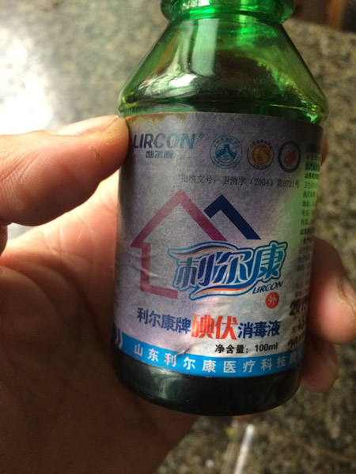 恨水先生家的碘伏，请大家忽略不讲究滴外观~
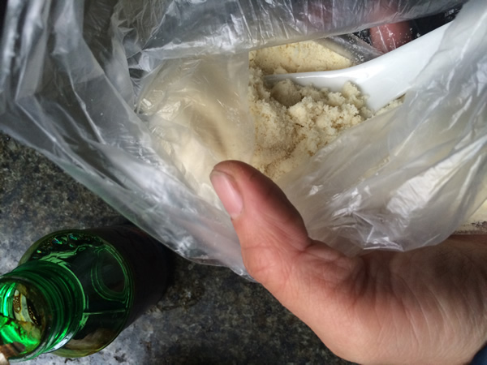 俺家的杏仁粉儿，左下那瓶就是碘伏了~
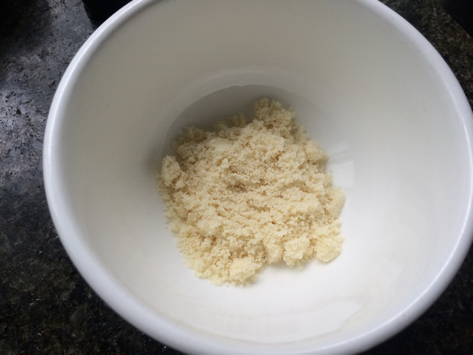 取两小勺杏仁粉放于小碗中~
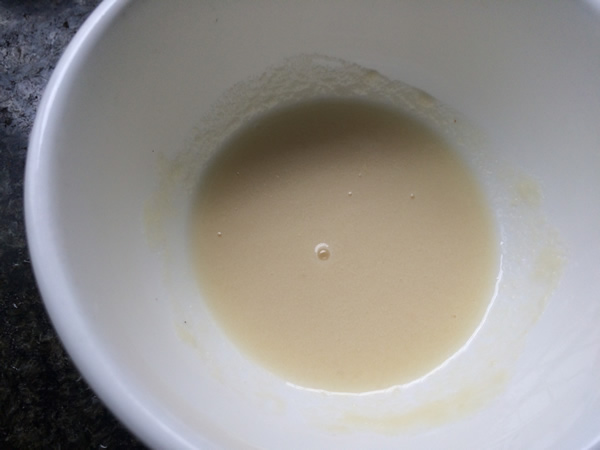 往杏仁粉中加适量水拌成糊状~
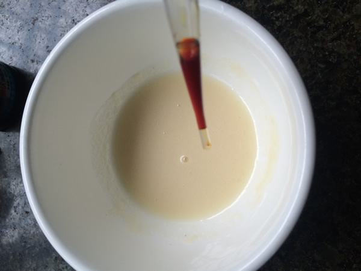 好吧，开始往杏仁粉糊中滴碘伏~
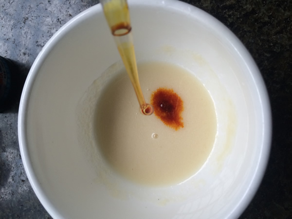 这一步要说明的是，如果杏仁粉中含有淀粉，滴下去的瞬间就会变色了。
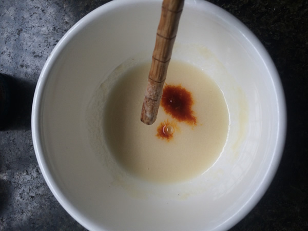 用筷子搅拌之~
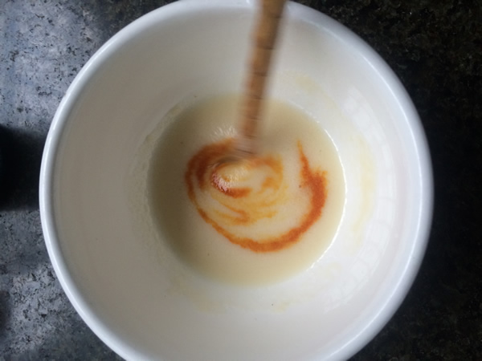 搅搅搅拌拌拌~
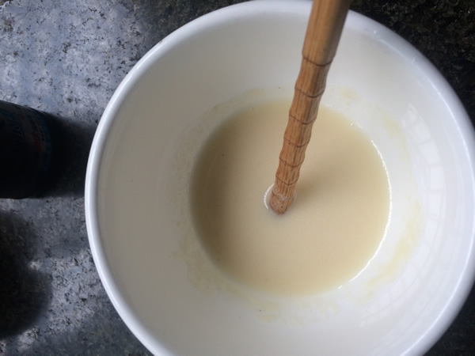 拌匀之后的颜色。为了做一下对比，俺让恨水先生上楼拿半包玉米淀粉来试验一下，俺们是用来烤戚风滴~
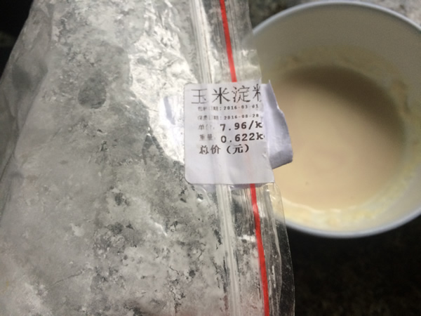 往杏仁粉糊里加了一小撮玉米淀粉拌匀，再滴碘伏，马上就变色了，下面放个对比的照片。
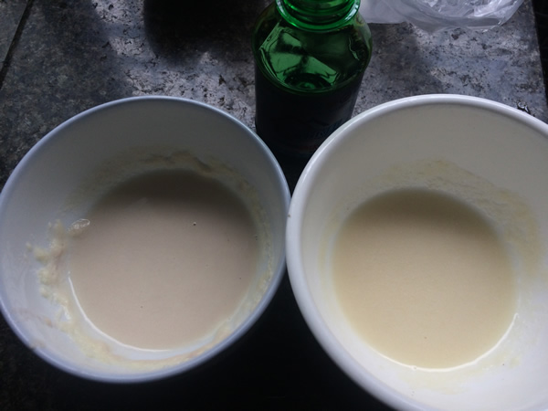 左边是添加了玉米淀粉的杏仁粉糊，照片上看呈淡蓝色，这跟淀粉的种类有关，有些是蓝色有些甚至是黑色，总之会变色就对啦。 右边是俺的杏仁粉糊了。如果还不放心的同志，可以自己实验，就这样吧。 谢谢浏览，再见~！ 2016.3.30 |
欢迎加入马卡龙新手QQ群：391076822 淘宝店：暗流烘焙 http://an-liu.taobao.com |
|
|